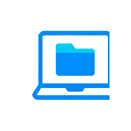
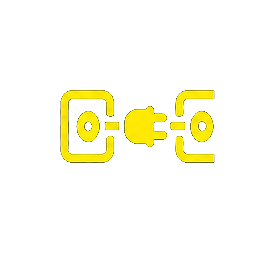
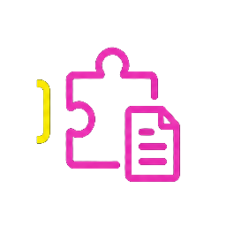
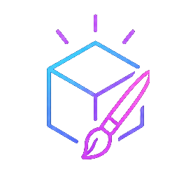
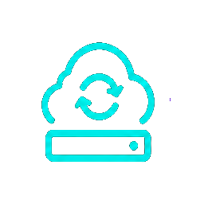
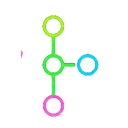
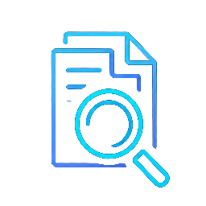

部門分享｜2026
AI Agent 基本功
從開工到收工，讓 AI 做出作品
我的工作流・一鍵安裝包・已上線成品
你現在怎麼用 AI？用一個詞回答（例：查資料、寫程式、翻譯…）
A 開場與全貌
今天帶走什麼

一個觀念
Agent 在
你的電腦工作，
不是在雲端聊天視窗
一套流程
開工→研究討論→做出作品
→GitHub→Vercel→收工

一包工具
掃 QR code，
複製我的一鍵安裝包
A 開場與全貌
全貌地圖：七個主題串成一條線
B 觀念專案、記憶、權限、用量、上下文
▶
C 能力讀檔、寫程式、上網、做成品
▶
D 連接MCP、CLI、權限
▶
E Skill三層設定
F 跨機協作雲端硬碟、同步、開工收工
▶
G 需求釐清RDQ 四象限
▶
H 實戰我的工作流（主角）
為什麼要學？現在沒有痛點，先知道目前發展到哪；真的有需求時，這套觀念能少走很多彎路。門檻在「要從頭換一套思維」，不是工具難。
B 核心觀念
生成式 AI vs AI Agent
生成式 AI（雲端對話）
- Gemini、NotebookLM、ChatGPT 聊天版
- 對話存在雲端，換電腦登入就能接續
- 只給文字答案，你得自己複製貼上、在工具之間切換
AI Agent（本機動手）
- 把雲端的模型「請到你的電腦」工作
- 讀檔、改檔、跑程式、操作瀏覽器
- 你在電腦上能做的事，它都能代勞
以前工作流被切成一段一段，人當膠水；Agent 讓人把時間留給思考與判斷。
B 核心觀念
要有「工作環境」，Agent 才能住進電腦
工作環境＝讓 AI 在電腦上運作的程式介面，像 AI 用的「作業系統」。
| 載體 | 模型來源 |
|---|
| Claude Code | Claude 系列（付費訂閱） |
| Codex 桌面版 | ChatGPT／GPT 系列（付費訂閱） |
| AntiGravity | Google／Gemini（Google 方案） |
- 付費版比較聰明、設定比較省事
- 入門：Codex 一般被認為性價比最高（含生圖，約每月 20 美元，較慢）；Claude Code 能力強但額度消耗快
- 不必三個都學，用手上已有的那個；觀念通用
⚠ 時效：免費模型與方案名稱常變，以現場當下為準。
B 核心觀念
專案＝電腦裡的一個資料夾
- 啟動 Agent 後第一件事：新增（或選擇）一個資料夾當「專案」，成品與對話紀錄都放這裡
- 一個專案可開多個對話（Session），每個對話是全新的上下文
例：同一專案開三個對話——收集資料、製作成品、做互動頁
- 與雲端 AI 的「專案」類似，只是檔案在本機
- 習慣：新專案＝新資料夾；Agent 也讀得到專案外的資料夾，但成果集中放專案內最方便
B 核心觀念
Agent 只記得兩個地方
全域設定檔
任何專案、任何對話都會讀：
你是誰、語言偏好、通用工具、常用技能
專案設定檔
只在這個專案讀：
專案目標、規則限制、依賴套件、目前進度
每次開新對話，Agent 先讀全域、再讀專案——這兩份就是它的長期記憶；其餘離開對話就不記得。
口訣：全域放「我是誰」，專案放「我要做什麼」。
兩份都是 Markdown 純文字，用自然語言請 Agent 幫你寫、幫你改。
B 核心觀念
各家設定檔放哪裡（Windows，~ ＝ C:\Users\你的名稱）
| 項目 | Claude Code | Codex | AntiGravity |
|---|
| 全域設定檔 | ~/.claude/CLAUDE.md（或 ~/.claude/rules/*.md） | ~/.codex/AGENTS.md | ~/.gemini/GEMINI.md |
| 專案設定檔 | <專案>/CLAUDE.md | <專案>/AGENTS.md | <專案>/ANTIGRAVITY.md、AGENTS.md |
| 全域技能 | ~/.claude/skills/<名>/SKILL.md | ~/.codex/skills/<名>/SKILL.md | ~/.gemini/config/skills/<名>/SKILL.md |
| 專案技能 | <專案>/.claude/skills/ | <專案>/.agents/skills/<名>/SKILL.md | <專案>/.agents/skills/ |
| 連接工具（MCP） | 全域 ~/.claude.json；專案 .mcp.json | ~/.codex/config.toml | ~/.gemini/config/mcp_config.json |
- 這些檔案每次開新對話都會讀進上下文，要知道在哪、並保持精簡
- 檔名只是預設值；同一資料夾裡各家 Agent 讀得到彼此的檔案，所以可以接力
- 路徑以各工具當時版本為準；不確定就問它：「請告訴我你的全域設定檔與技能資料夾實際在哪」
B 核心觀念
換電腦等於失憶
- 登入同一個帳號，在另一台電腦裝好 Agent，它完全不記得你在別台做過什麼
- 原因：記憶在本機的設定檔與專案資料夾，不在雲端
- 先選好「主要工作的電腦」；需要跨電腦時，用 F 區的方法同步
生成式 AI 的記憶在帳號；Agent 的記憶在檔案。
B 核心觀念
權限：開多大，取決於熟悉程度
手動
逐步詢問
半自動
敏感動作才問（新手建議）
全自動
全部放行
| 工具 | 做法 |
|---|
| Claude Code | 計畫模式（先規劃再確認）／自動模式（半自動）／略過權限（全開，須先在設定打開開關） |
| Codex | 自動審查（新手）→ 完整存取（熟了再開） |
| AntiGravity | Turbo Mode（半自動）；指令白名單加入 npm、python、pip |
全自動時刪錯、改錯不會先問你，所以要有版本控制與備份兜底；重要專案先讓 Agent 出計畫，確認後才執行。
B 核心觀念
模型分級：S／A／B 三級思維
S 級（最聰明、最貴）
規劃、除錯、重要分析、複雜推理
A 級（性價比高）
日常開發、一般工作
B 級（便宜或免費）
已規劃好的大量重複任務、粗工
- 另一個旋鈕「思考深度」：想越久越聰明，也越耗 Token；一般用中高檔，特殊任務才開最高
- 用在 Agent 上的模型要聰明到一定程度；太小的模型做複雜任務容易出錯
- 頂級模型每百萬 Token 價格可差到數倍至十倍以上
⚠ 時效：模型名稱、排名、價格每月在變，現場用最新榜單。
B 核心觀念
用量：5 小時額度與週額度
- 5 小時內只能用一定量，同時累積週額度；週額度用完要等下週
- 週額度會被多次 5 小時額度吃光；廠商有時「重置」或「加倍」
- 超額會用「額外用量」計費，別在不知情下燒錢
| 工具 | 在哪看用量 |
|---|
| Claude Code | 設定→Usage，或專案右下角小圓圈 |
| Codex | 設定裡的剩餘用量（100% 往下扣）；可開「顯示上下文視窗使用量」 |
| AntiGravity | 設定→Models，Gemini 與 Claude／GPT 分開計算 |
⚠ 時效：額度規則與價格以官方公告為準。
B 核心觀念
上下文（Context）＝Agent 的短期記憶
- 這個對話裡 AI 目前「看得見」的全部：設定檔、對話歷史、讀進來的檔案
- 大小因模型與方案而異（有的 100 萬、有的 25 萬）
- 用到六、七成仍聰明；逼近八、九成開始忘東忘西——聊久了變笨，就是這個原因
- Agent 介面會顯示剩餘量，要養成習慣去看
- 為什麼燒 Token：每輪都把前面全部內容再送一次，越滿越貴
全域與專案設定檔每次開新對話都整份載入——必須精簡。
B 核心觀念
上下文快滿時怎麼辦（兩招）
① 壓縮對話（Compact）
把冗長往返濃縮成重點、騰出空間。
缺點：壓縮兩三次以上仍可能遺失細節
② 收工→開新對話→開工（推薦）
把重點寫進專案設定檔，開新對話讀回來，Agent 又恢復聰明。
- 配套：每個對話只做一件任務；細節放進 Obsidian 這類第二大腦，需要才讀
先把五件事管好：權限、設定檔、用量、模型、上下文。
C
Agent 本身能做什麼
讀檔、寫程式、上網、做成品
C Agent 能做什麼
四種基本能力
讀檔案
提供路徑它就能讀

寫／跑程式
幾乎能完成電腦上任何事
上網
搜尋、抓資料、下載檔案

產出成品
Word、Excel、PPT、網頁、圖、影片
生成式 AI 會「說」，Agent 有「手腳」。
C Agent 能做什麼
讀檔案的關鍵習慣：給「精準路徑」
- 檔案上按右鍵→複製路徑（Windows：
Ctrl+Shift+C），貼給 Agent；資料夾也可以
- 好處：不必到處搜尋（省 Token）、檔案更新後重讀就是最新、不佔上下文
- 比「拖檔案進對話」更推薦；專案資料夾以外的路徑也讀得到
請讀這個檔案並用三句話摘要它在講什麼：
C:\...\某份規格.pdf
注意：PDF 內的圖片與圖片檔需要「多模態」模型才讀得到；純文字模型讀不到。
C Agent 能做什麼
示範：整理資料夾
請依檔案內容把這個資料夾分類整理。
你認為該刪除的，不要直接刪，移到一個叫「待刪除」的資料夾，由我確認後再刪。
C:\Users\...\Downloads
- 成果：資料夾分好類，疑似可刪的集中在「待刪除」，由人最後決定
- 整理檔案這類動作，建議用比較聰明的模型；頂級模型一般不會亂刪
C Agent 能做什麼
執行程式與自動裝套件
Agent 背後用 Python 完成任務，缺套件會自己安裝——你不必懂程式，只要描述結果。
| 類別 | 能做什麼 | 常用套件 |
|---|
| Word | 套印範本、批次產生、合併講義 | python-docx |
| Excel | 計算、標紅、排序、依欄位拆檔、畫圖 | pandas、openpyxl、Matplotlib |
| PowerPoint | 一頁一圖、統一字型標誌 | python-pptx、Pillow |
| PDF | 合併、拆分、浮水印、OCR、轉圖檔 | pypdf、pdfplumber、pdf2image |
| 小工具 | 連結轉 QR code、影片轉字幕、轉圖片 | qrcode、Whisper |
- MarkItDown：把 PDF、PPT 轉成乾淨的 Markdown 再餵給 AI，效果通常比直接丟原檔好
- 做法：把「工具清單」整理成一份檔案，丟給 Agent：「讀這份檔案，把套件都裝好」——同一台電腦裝一次，所有 Agent 通用
- 〔實戰〕我的
office-agent-skills 就是這個做法（含 MarkItDown 與 6 個技能）
對研發同事：測試資料彙整、規格轉文字檢索、報表與圖表自動化。
C Agent 能做什麼
上網與操作瀏覽器（各家不同）
| 工具 | 上網方式 |
|---|
| Codex | 內建「電腦使用」，用自己的游標操作瀏覽器；上網功能被認為最強 |
| Claude Code | 需先裝它的 Chrome 外掛並登入帳號 |
| AntiGravity | 內建 Playwright（背景虛擬瀏覽器，有些網站有反爬蟲限制） |
- 提示裡寫「上網幫我做某件事」，它會自動選用；示範：上機構官網找出並下載某份指定文件
- 原則：能用 API 或連接器就不要用「操控畫面」（慢、脆弱）
- 〔實戰〕我的安裝包幾乎都用 CLI 或 API：GitHub
gh、Vercel vercel、NotebookLM nlm、Firebase firebase；需要登入時，只請使用者自己在瀏覽器授權
C Agent 能做什麼
示範：一句話做出完整成品
概念：上網下載歷屆試題 → 每題截圖放進 PPT 一題一頁 → 下一頁附解答 → 存進專案。一次處理 27 題，還會自己找官方答案核對。
現場 Demo 提示詞（Claude Code）
請在這個專案資料夾完成，做完告訴我檔名：
1. 上網搜尋「USB PD 3.1 EPR」的官方或可信技術資料，記下參考網址
2. 做成 3 頁 PPT：①一句話說明 ②表格整理新增的電壓與功率等級 ③「參考來源」與「我不確定、需人工確認的地方」
3. 版面簡潔、字型統一；存成 USBPD31-EPR.pptx
數字以官方資料為準，查不到的不要猜。
- 重點：一句話串起「查資料→整理→排版→輸出」，看它如何自己標出不確定之處，最後人工核對
- 圖與數據不一定正確，一定要人工檢查；速度與保守程度各家不同，沒有絕對好壞
C Agent 能做什麼
使用安全與人的角色
- 先半自動；限制 Agent 在專案目錄內工作；用精準路徑，不要讓它在整顆硬碟亂找
- 網路上隨便抓來的套件、repo、Markdown 說明檔不要亂裝，可能含惡意程式
- Agent 代勞的是勞務；內容品質與專業判斷必須由人把關
- 小功能：Codex 設定可開「聽寫」，設快捷鍵即可語音輸入，中文辨識準確
D
連接外部工具
通道（怎麼接）與權限（給多少）是兩件事
D 連接外部工具
為什麼要連？拆掉「每換工具就重學」的牆
拖動滑桿：沒連接 → 連接之後（以「做一張封面圖」為例）
連接之後
沒連接
① 開網頁生圖工具
② 輸入描述
③ 下載
④ 貼進簡報
每換一個工具就要重學一遍介面，人當膠水在視窗之間搬東西。
一句話：「畫一張 16:9 的封面圖，風格專業明亮」
圖片直接存進專案資料夾 → 簡報技能把它插進投影片。
連上我的 draw 技能（呼叫 OpenAI 生圖 API）後，三個工具串成一條線。
價值不在「能連」，而在連起來之後能把多個工具串成一條工作流；手機版聊天 AI 能連單一服務，但串不起整體流程。
D 連接外部工具
四種「通道」（怎麼接，像水管）
① 內建連接器
原廠寫好的 MCP，第一優先
② MCP
「轉接頭」，最萬用
③ CLI
用命令列控制，背景執行
④ 直接操控畫面
模擬滑鼠鍵盤，最慢、最不保險
- 優先順序：內建連接器 → MCP → CLI → 直接操控
- 選通道前先問兩題：
①是 Google 家的服務嗎？（Gmail、雲端硬碟、NotebookLM、Firebase——授權較嚴）
②我要「簡單使用（只讀）」還是「完整控制（讀寫刪改下載）」？
- App 內建的連接器可直接選用；其餘用我的安裝包一步一步裝（見 I 區）
D 連接外部工具
三種「權限」（給多少，由低到高）
免鑰匙
本機就能控制
例：讀硬碟上的 Obsidian 筆記
API Key／Token
給 Agent 一把鑰匙，拿到的人（含外流後的別人）都能開門
〔實戰〕生圖：金鑰存本機 ~/.openai.env，不貼進對話、不寫進 repo
OAuth
像「門禁卡」：有範圍、會過期、可撤銷，最安全但最麻煩
〔實戰〕GitHub、Vercel、NotebookLM 都由使用者自己在瀏覽器登入
能用 OAuth 就用 OAuth，不得已才用 API Key。「怎麼接」與「給多少權限」要分開想。
D 連接外部工具
我的安裝包怎麼接（哪些用 CLI、哪些用 MCP）
| 服務 | 通道 | 做法 | 權限 |
|---|
| GitHub | CLI gh | 直接用 CLI，不裝 MCP | 瀏覽器登入 |
| Vercel | CLI vercel，官方 MCP 選用 | CLI 登入就夠；MCP 增加固定開銷、授權涵蓋所有專案，預設不加 | 瀏覽器登入 |
| NotebookLM | CLI nlm ＋ MCP | 先 nlm login，再用 MCP 查筆記本 | Google 登入 |
| Firebase | CLI ＋ MCP | 先登入，需要 Agent 直接操作才加 MCP | Google 登入 |
| Obsidian | MCP（指向 vault） | 本機直接讀寫 | 免鑰匙 |
| Supabase | MCP | 金鑰由使用者在終端機自己輸入 | Token 類 |
公司內部 LLM
（AIH200×2 at GTC） | 內網 API（OpenAI 相容 /v1） | 模型 Qwen3.8-Flash-Next-FP8
AI URL：http://<內網伺服器>:<port>/v1 | 內網限定 |
| 生圖 | 技能＋API | 金鑰存本機 | API Key |
經驗法則：本機有檔案或有 CLI 的先用 CLI；需要 Agent 反覆查詢才加 MCP——每個 MCP 都有固定開銷。
別人的實測：①某單字遊戲平台沒有連接器→先查官方，沒有就別硬做；②Google 待辦清單無官方連接器→社群 MCP＋自建 OAuth＋重開 Agent 才生效，約半小時。新電腦：內建連接器跟帳號走，自建 MCP／CLI 每台都要重裝。
D 連接外部工具
「連接指南」做法＋我的實際連接
做法：把「寫給 Agent 看的連接指南」放進專案；之後說「我想連某某工具」，它會評估該走哪條路並帶你操作。
| 服務 | 通道 | 狀態 |
|---|
| GitHub | CLI gh | 已連、已驗證 |
| Vercel | CLI vercel；官方 MCP 選用、目前不啟用 | 已連（push GitHub→自動部署，不經 MCP） |
| NotebookLM | MCP ＋ nlm | 已連 |
| Obsidian | MCP（本機 vault） | 已連 |
| 雲端硬碟／Notion／Claude Docs／瀏覽器 | 連接器或 App | 已連 |
| Firebase | CLI（已全域安裝） | 已連 |
| Slack、Asana、Linear… | 有連接器 | 尚未授權 |
節省上下文：「已連」不等於「每次都開」。
- 雲端連接器（Vercel、雲端硬碟）：需要時才開、用完關回去
- 本機 MCP（NotebookLM）：從全域移到「需要它的專案」的
.mcp.json
- 沒在用的外掛整組停用；來路不明的連接器或 MCP 不要接
E Skill 與三層設定
Skill＝一份可重複使用的「使用說明書」
- 本質是 Markdown 純文字檔：什麼情況觸發、做哪些步驟、用哪些內部工具與外部連接
- 定義：把「你的電腦能做的事」包成一個工作流程，寫成說明書
- 學習順序有原因：先內部工具（C）→ 再外部連接（D）→ 最後用 Skill 組成流程；跳過前兩步，Skill 常因缺工具而卡住
- 所有 Agent 都讀得懂這種說明書，是通用格式
E Skill 與三層設定
觸發方式與列出現有技能
- 兩種觸發：自動（提示出現相關關鍵字，Agent 判斷）或直接指定技能名稱
- 不確定有哪些技能就問：「列出我的全域技能並簡單說明」
- 我自己的技能類型：生圖、語音合成與播放、影音轉字幕、簡報製作、圖表製作、專案初始化／開工／收工
- 生圖成本概念：低畫質設定下單張約台幣數毛，月費額度可產生上千張 ⚠ 時效
E Skill 與三層設定
三層：技能／全域／專案
| 層 | 放什麼 | 例 |
|---|
| 全域設定 | 與「你這個人」有關、每個專案都要用 | 語言偏好、GitHub 帳號、通用技能 |
| 專案設定 | 與「這個專案」有關 | 專案目標、規則限制、只在本專案用的技能 |
| 技能 | 可重複的工作流程說明書 | 專案初始化、語音回答、簡報製作 |
判斷：「換一個新專案後，Agent 還需要記得嗎？」需要→全域；不需要→專案。
- 全域不要放太多技能：誤觸發機率變高，也每次耗上下文
- 〔實戰〕每個技能的名稱與描述都會在每個對話開頭載入。我把只在特定專案用的 15 個動畫影片類技能，從全域搬到該專案的
.claude/skills/，全域剩 14 個
- 互相呼叫的技能要整組搬；搬前先備份到技能資料夾以外，否則會載入兩份
E Skill 與三層設定
範例一：「用語音回答我」
- 需求：多開幾個視窗讓 Agent 跑任務時，不必一直回頭看螢幕
- 做法：寫一個語音技能＋在全域設定寫「我說『用語音回答我』就用該技能播放結論」
- 設計「三層備援」：免費雲端語音合成（串流，約一秒聽到第一句）→ 失敗改第二種 → 退回 Windows 內建離線語音；背景執行
- 好處：只讀出結論，不太耗 Token
E Skill 與三層設定
範例二：「語音輸入文字正規化」
- 問題：語音輸入常有同音錯字、斷詞錯誤、英文工具名被音譯
- 做法：寫一份全域規則，讓 Agent 依上下文自行修正；小錯字不影響就直接理解
- 若涉及人名、檔名、路徑、指令、數字、日期、核心需求且沒把握：先問一句再做，不自己猜了就執行
- 效果：輸入法清洗＋Agent 依上下文再修的雙重保險，幾乎不耗 Token
E Skill 與三層設定
怎麼分享 Skill 與整個專案
簡單版
請 Agent 把技能存成一個資料夾，交給別的 Agent 讀；或當備份
進階版
放上 GitHub repo，把網址給別人，對方的 Agent 讀完就能照做
- 觀念轉變：repo 不再只放程式碼，也放「寫給 Agent 看的使用說明書」
- 大型專案可做成「複合型技能」：說明書寫明去哪下載素材、裝哪些程式、連哪些工具、建哪些技能
- 一次裝進多個 Agent：請它「也裝到我電腦裡其他 Agent」，它會依各家格式改寫；每個 Agent 都有「製作技能」的內建技能可協助
E Skill 與三層設定
別人的 Skill 不能盲裝
- 別人的技能長在他的環境：你可能缺工具、缺連接、缺金鑰、缺檔案；Agent 會想辦法補齊，所以跑很久也可能漏東漏西
- 熱門 repo（幾萬顆星）不代表安全；外部技能可能夾帶惡意行為
- 比較好的做法：把別人的當參考，自己需要什麼就自己長出來，或改成適合自己工作流的版本
F
跨 Agent、跨電腦協作
雲端硬碟、同步、開工與收工
F 跨 Agent、跨電腦
問題
- 同一台電腦有好幾個 Agent，怎麼接力做同一個專案？
- 有兩三台電腦，怎麼無縫換？
- 全域設定與技能做完，怎麼同步到其他 Agent 與其他電腦？
F 跨 Agent、跨電腦
基礎建設一：雲端硬碟「桌面 App」

- 裝的是雲端硬碟的電腦版應用程式，不是瀏覽器版；裝好後電腦多一個磁碟機代號（例如 G:）
- 專案資料夾建在雲端硬碟裡，Agent 的專案路徑選這個資料夾，別台電腦讀得到同一份
F 跨 Agent、跨電腦
基礎建設二：同步設定與技能（含跨電腦步驟）
要同步的是「全域設定與技能」；專案資料夾本身靠雲端硬碟。
外部常見做法
chezmoi＋GitHub repo：原電腦 chezmoi add，另一台 chezmoi update。這是其中一種，不是唯一解
〔實戰〕我的做法
我沒用 chezmoi：專案與 vault 放雲端硬碟，規則檔放 vault；新電腦的技能與設定用一鍵安裝包重裝
- 兩台電腦都裝雲端硬碟 App，專案在雲端硬碟內
- 新電腦還原全域設定與技能（一鍵安裝包）
- 開 Agent、選同一個專案資料夾、說「開工」
同一台電腦的其他 Agent：說「把這三個技能也更新到我電腦裡其他 Agent」（技能只是說明書檔案）。把電腦交給別人時：解除安裝雲端硬碟 App。
F 跨 Agent、跨電腦
基礎建設三：初始化／開工／收工三個技能
專案初始化
問你專案要做什麼，建專案設定檔、.gitignore；視環境建 GitHub repo、Obsidian 筆記
開工
讀專案設定檔（必要時 GitHub、Obsidian、交接檔），知道上次做到哪，再問你這次要做什麼
收工
把進度、決策寫回專案設定檔，更新 GitHub 與 Obsidian；沒跑收工，這兩處不會更新
- 跨 Agent 接力：收工時把「下一步、上次中斷在哪、已知限制」寫進
handoff.md；換另一個 Agent 說「開工」就能接著做；也能請另一個 Agent 審查，把問題寫進交接檔再叫原 Agent 去修
- 〔實戰〕AntiGravity 上實測
handoff.md 寫入與新對話讀回正常；我的 /startup、/shutdown 就是對應技能
F 跨 Agent、跨電腦
三處各司其職
雲端硬碟
跨電腦同步專案檔案

GitHub
版本控制、備份、分享；只放程式碼與重要說明
Obsidian 第二大腦
完整歷程與細節；需要才讀；久了成為知識庫
.gitignore：API Key、帳密、隱私資料不進版本控制- Obsidian 本質是 Markdown 檔案，Agent 直接讀寫；任何能讀 Markdown 的筆記軟體都可替代
F 跨 Agent、跨電腦
注意事項
- 避免多個 Agent 同時寫同一個檔案；工作要拆分
- 雲端硬碟大量頻繁讀寫可能被限流：先在本機暫存資料夾做完，再複製回去
- 一次讀太多 Obsidian 與 GitHub 內容會撐爆上下文：原則是「每次必讀的只有專案設定檔」
- 要求 100% 正確的數學或幾何，用截圖保存題目，不要讓 AI 重現圖形
- 這些設定會多花一些 Token；廠商未來可能提供更方便的方式，這是目前可行的做法
G
需求釐清：RDQ 四象限
Requirements Discovery Quadrant Method
G RDQ 需求釐清
問題：提示詞完整 ≠ 需求完整
- 成品與想像有落差，常常不是 AI 不夠強，而是需求沒對齊
- 不先釐清，做專案像在賭博——看到成品才知道有沒有符合
- 位置：放在「專案初始化」之後、真正動工之前；也可獨立使用
G RDQ 需求釐清
四象限（知道／不知道 × 說得出／說不出）
| 象限 | 意思 | Agent 怎麼幫你 |
|---|
1 Known Knowns
知道自己知道 | 你清楚、能直接說的需求 | 你說；Agent 複述確認 |
2 Known Unknowns
知道自己不知道 | 明確知道有疑問的部分 | 你講出疑問；Agent 澄清並給選項 |
3 Unknown Knowns
不知道自己知道 | 太熟而沒講的細節（評分標準、發佈方式…） | 選項式訪談把它挖出來 |
4 Unknown Unknowns
不知道自己不知道 | 根本沒想到的盲點與風險 | 通用題庫主動提醒：備案、個資、著作權… |
一般人只做到 1、2；3、4 靠 Agent 訪談與題庫補齊。
G RDQ 需求釐清
示範流程：研發單位案例
做一份新產品的 Design Check List，各部門（EE、ME、EMC、RF、Thermal）可以勾選進度
- Agent 先複述：新產品 → 各部門檢查項目 → 勾選進度 → 看整體完成度；再問四個影響架構的問題：
①產品類型與階段（EVT／DVT／PVT） ②各部門項目從哪來（既有範本、規格書、過往專案）
③「勾選」的定義（誰確認、要不要附證據、未通過怎麼處理） ④使用規模與權限（誰能改、是否機密、能否放雲端）
- 再提你沒想到的選項：版本與變更紀錄、跨部門相依項目、負責人與到期日、不適用（N/A）須註明理由、匯出 Excel／PDF、避免機密放到公開網址——你勾選要的
- 產出：一頁需求規格卡（已確認／假設／採納／排除／規格／驗收條件），你確認後才開工
驗收例：匯入一個已完成專案的舊清單，勾選與完成度須與人工統計一致
- 可再問第二、三輪（上限三輪）：部署平台、資料庫、登入方式…視需求只問一輪也可以
G RDQ 需求釐清
題庫、換領域與工具對應
- 技能內建六類題庫：五類通用（辦活動、做簡報…）＋一類專屬某職業情境；越聰明的模型，問的問題越完備
- 換領域：請 Agent「把最後一類題庫換成我的領域，並符合需求探索的方式」
- 對硬體研發可換成：規格、驗證條件、量測設備、供應鏈、法規與安規、風險備案
- 可獨立裝成技能（有 Claude Code／AntiGravity 版，也有 ChatGPT 版）
- 對應我的安裝包：
rdq-grilling-skills（/rdq ＋ /grilling），見 I 區；另一個類似的工具問題很多，這個設計較精簡、有效率
H
我的實戰工作流
本場主角：前面各區，都在為這一區鋪路
H 實戰工作流
我的工作流總覽
開工F4
▶

研究討論C5 上網、G 需求釐清▶
做出作品C4／C6、E3
▶
git → GitHubF5
▶
Vercel 發布D 連接
▶
作品形式不限：簡報、互動動畫網頁、影片… 每個題目都走同一條六步流程。
H 實戰工作流
步驟 1：開工
- 讀專案設定檔、工作筆記，確認上次做到哪、有無未提交變更
- 好處：換電腦、換 Agent、換對話都能無縫接續
- 開工時 Agent 的回報：專案、上次做到哪、本地 git 狀態、遠端有沒有新 commit、建議下一步
說一個字：「開工」。
H 實戰工作流
步驟 2：依題目做 research 並討論
- 先釐清需求（RDQ），再上網與讀本地資料做研究
- 資料來源分級：官方原文、他人文章、自己的筆記，標註清楚，不把推論當事實
- 產出：研究摘要＋待確認清單，與我來回討論後定案
H 實戰工作流
步驟 3：做出作品（簡報、互動動畫網頁、影片…）
- 依題目把研究成果做成作品：簡報、互動動畫網頁（圖表、動畫、可調參數）、配音字幕解說影片、文件
- 不同形式用不同技能（見 E3）
- 用途：讓同事自己動手調參數理解原理，比文件更快懂
- 主範例：
dovetail-eud-mount（軍規胸掛 × 5 吋 EUD 鳩尾槽機構，20 個提案與 2D／3D 動畫）
現場示範 1–2 分鐘：調整參數→看到動畫變化。
H 實戰工作流
步驟 4–5：git repo → GitHub → Vercel 發布
- 每個題目一個 repo；新建時先設私有，確認沒有敏感資料、決定分享後才改公開（公開前掃描檔案名稱與關鍵字）
- Vercel 連 GitHub，push 即自動部署，得到可分享網址
.gitignore 與 CLAUDE.md 排除，避免敏感內容或內部規則外流
本機專案
▶
git pushGitHub
▶
自動部署Vercel
▶
https://項目名.vercel.app
H 實戰工作流
成果牆：已發布的 13 個 Vercel 項目
Vercel 項目名＝GitHub repo 名，一對一；每次 push 到 main 自動部署。點卡片開網址（查詢日期 2026-10-26）
repo：github.com/tedchen0814/<項目名>（皆公開）
H 實戰工作流
步驟 6：收工
- 把進度、決策、踩坑寫回專案設定檔與工作筆記；commit／push
- 在根目錄項目清單更新狀態；重要知識另走「餵大腦」流程，不直接寫進知識庫
- 好處：下一次開工只要幾秒就能接上
收工是為了下一次開工。
H 實戰工作流
這條流程帶來什麼（誠實版）
優點
- 可重複：每題都走同一條六步流程，13 個項目都是同一套做法
- 可累積：進度、決策、踩坑寫回，久了就是自己的知識庫
- 可分享：Vercel 網址、公開 repo、一鍵安裝包 QR code
- 可換機：換電腦或換 Agent，說「開工」就接續（全域設定與技能要另外同步）
代價
- 前置設定耗時：工具、連接、技能第一次要花時間；一鍵安裝包可大幅縮短
- 多花 Token：連接器與技能清單占固定開銷；開工要讀、收工要寫多處；對話越長越貴。對策：一個任務一個對話、不用的連接器關掉、不常用的移到專案層
- 圖與數據必須人工驗收：AI 產出的圖、公式、數字可能出錯，由人把關
I
一鍵安裝包與 QR code
掃一下，把整套工作流帶回家
I 一鍵安裝包
一鍵安裝是怎麼運作的
- repo 裡是「寫給 Agent 看的說明書」：把網址貼給 Agent，說「幫我安裝」
- Agent 讀完會自動檢查環境、安裝需要的 Skill、必要時引導你登入
- 安全習慣：先讓 Agent 說明「會安裝什麼、會改哪裡」，確認再執行
- 原理回扣：就是 E 區「用 GitHub repo 分享整個工作流」
請讀 https://github.com/tedchen0814/claude-code-starter-packs ，
先告訴我你會安裝什麼、會改哪些檔案，我同意再開始。
I 一鍵安裝包
安裝包清單（皆為公開 repo）
| 安裝包 | 用途 | Repo |
|---|
| Claude Code 懶人包 | 環境建置、MCP 串接、Skill 一鍵安裝 | claude-code-starter-packs |
| Codex 懶人包 | Codex 的研發／個人學習版 | codex-starter-packs |
| AntiGravity 懶人包 | AntiGravity 2 的安裝包（含 Vercel） | antigravity-starter-packs |
| 辦公室技能包 | 簡報、Word／Excel／PDF 批次處理、生圖 | office-agent-skills |
| 需求釐清＋拷問 | /rdq、/grilling | rdq-grilling-skills |
| 研發動畫簡報 | 原理動畫＋配音字幕解說影片 | rd-motion-deck |
網址：github.com/tedchen0814/<repo>
I 一鍵安裝包
QR code 牆：掃碼開 repo
Claude Code 懶人包環境、MCP、Skill
Codex 懶人包研發／學習版
AntiGravity 懶人包含 Vercel
其餘三個（辦公室技能包、需求釐清＋拷問、研發動畫簡報）見下一頁。
I 一鍵安裝包
QR code 牆（續）
辦公室技能包簡報、文件、生圖
需求釐清＋拷問/rdq、/grilling
研發動畫簡報原理動畫＋影片
I 一鍵安裝包
安裝後的第一件事
- 讓 Agent 列出「已安裝的 Skill 與用途」
- 跑一次「開工」確認環境正常
- 把想改的地方，直接用自然語言告訴 Agent 調整
J 風險與結語
使用 Agent 的安全守則
- 權限先半自動，再視熟悉度放寬
- 金鑰、帳密、個資、內部機密不提交到 GitHub；
.gitignore 要設
- 外部 Skill／repo先讀再裝；不明來源不裝
- 公開發布前檢查：網址是否含內部資訊、專案設定檔是否被排除
- 成果一定人工驗收（尤其圖、公式、數據、引用）
J 風險與結語
常見踩坑
| 狀況 | 解法 |
|---|
| 對話太長變笨 | 收工、開新對話 |
| 沒寫進設定檔，下次不記得 | 收工時寫回專案設定檔 |
| 換電腦忘了同步設定 | 先同步（一鍵安裝包）再開工 |
| 雲端硬碟大量讀寫被限流 | 本機暫存再複製回 |
| 多個 Agent 同時改同一個檔案 | 拆分工作範圍 |
| 裝連接器或 MCP 後沒生效 | 重開 Agent |
| 技能、連接器全裝全域、什麼都不關 | 常用放全域、特定用途放專案層，連接器用完就關 |
J 風險與結語
我的建議上手順序
- 選一個 Agent、建一個資料夾、跑一次簡單任務
- 設好權限與全域設定
- 裝初始化／開工／收工三個技能
- 找一個真實題目走完「研究→作品→GitHub→Vercel」一輪
- 再逐步加外部連接與自訂 Skill
開工，做出作品，收工。
每一次的成果都留下紀錄，下一次接著做。
參考資料：一套公開的 AI Agent 基本功影片系列（EP01–EP07）的整理，個人學習用